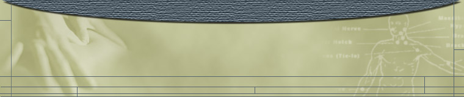

The Tuina Practitioner
Essential Qualities of the Tuina Practitioner
 | The practitioner must be fully trained in Tuina, which INCLUDES | |
| complete training in Traditional Chinese Medicine. |
Tuina is not something that can be learned quickly or easily. If a massage therapist were
to take a class or even several classes to learn the physical techniques of Tuina, this still
would not make them a Tuina practitioner. They must also be fully trained in Traditional
Chinese Medicine, of which Tuina is a part. The body must be viewed from the Chinese
Medical paradigm. Diagnosis is done from this paradigm, and the treatment protocol
and plan follows logically.
In addition to his extensive training in Tuina, Brian is Nationally Board Certified in Oriental
Medicine (including Acupuncture and Chinese Herbs) by the NCCAOM.
| The practitioner must practice Qigong. |
The practice of Qigong aids the practitioner in the execution of the techniques of Tuina.
techniques. Also, the sensitivity (ability to sense disharmonies in the patient) of the
practitioner's hands is increased.
Brian has been practicing Qigong since 1990. He has training in many different styles of
Qigong and has learned from many different instructors. His Qigong practice uniquely
draws upon and combines his studies of Qigong, Buddhist meditation, Kung Fu, T’ai Chi,
Doayin, and his expertise in Chinese Medicine.
| The practitioner must practice T'ai Chi or Kung Fu. |
The physical practice of Tuina is demanding. The practitioner does much physical work
practitioner develops the correct structural alignment, endurance, and physical strength to
properly apply the techniques .
Brian has been practicing various martial arts since the age of 6, including Judo and
Chinese Kung Fu (various empty hand systems and Chinese weaponry). Brian has also
been practicing T'ai Chi since 1990, studying Yang Style, Yang Style straight sword, and
Chen Style T'ai Chi.